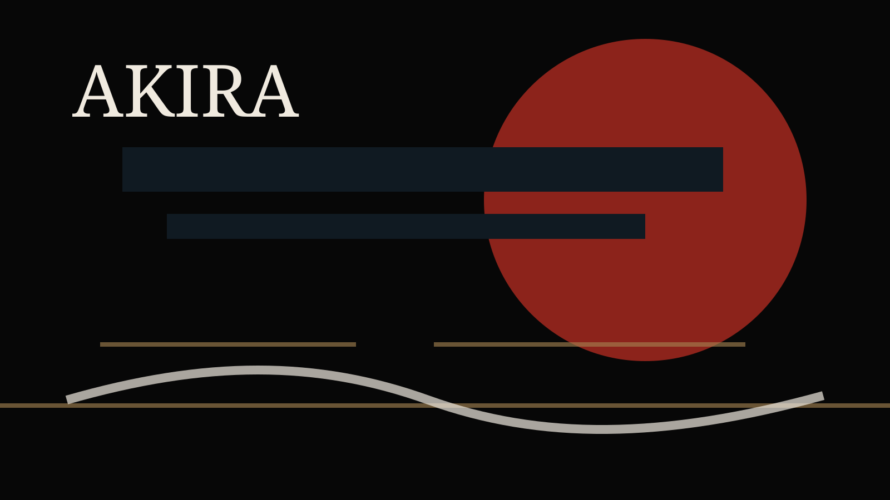

Akira, lançado em 1988 e dirigido por Katsuhiro Otomo, é um dos filmes que mudaram a forma como o mundo enxergava anime. Antes dele, muita gente fora do Japão ainda associava animação japonesa a televisão infantil ou produto de nicho. Depois dele, ficou difícil ignorar que anime também podia ser cinema adulto, urbano, político e tecnicamente ambicioso.

Nascimento de Neo-Tokyo
A história nasce do mangá de Otomo e se passa em uma Neo-Tokyo reconstruída depois de uma catástrofe. A cidade é personagem: congestionada, violenta, luminosa, cheia de concreto, protestos, gangues, laboratórios e trauma político.
Kaneda e Tetsuo entram nesse mundo como jovens atravessados por abandono, raiva e desejo de poder. A escala cresce até o colapso, mas o centro emocional continua sendo a relação entre amizade, inveja e perda de controle.
Por que virou clássico
O impacto de Akira está na soma rara entre animação detalhada, ritmo cinematográfico, desenho de cidade e sensação de fim de era. O filme parece sempre prestes a explodir.
Legado
Seu legado aparece em videoclipes, filmes, games, moda, ficção científica e no vocabulário visual do cyberpunk. Mais do que um clássico para rever, Akira virou uma origem compartilhada para imaginar metrópoles saturadas e juventudes sem futuro garantido.
Fontes consultadas
Origem editorial: perfil de anime clássico publicado no Japão Relativo em 16 de agosto de 2026.